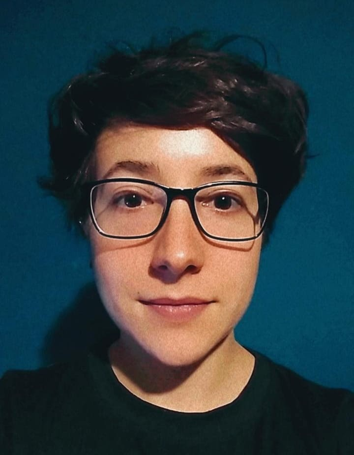

María Victoria Tela
General Martín de Gainza 555, CABA, Argentina.
Teléfono: +54 9 1123912100
Datos generales
Fecha de nacimiento:
11/09/1995
DNI:
39154792
Mail:
victoria.tela@gmail.com
Formación académica
12/2020: Licenciatura en Psicología UBA (Título en trámite).
07/2018 -12/2018: Curso de Acompañamiento Terapéutico, Centro PsicoSocial Argentino.
01/2015: Curso de bartender profesional, barista y arte latte en el Instituto Argentino de Cocteleria.
12/2013: Título secundario en SEADEA (Sistema de Educación a Distancia del Ejército Argentino).
Experiencia laboral
08/2020 - 05/2021: Acompañamiento terapéutico Dx Asperger y TDA niño de 13 años.
02/2020 - 05/2021: Acompañamiento terapéutico Dx Tourette, Dislexia y TDAH. Niño de 11 años.
01/2017-04/2017: Bartender, camarera y cajera en Clásico Fernández, San Telmo, CABA. Referencias Laborales: Mariano Fernandez: profesordeukelele@gmail.com
12/2015- 03/2016: Bartender y camarera en Bebop Club, San Telmo, CABA. Contacto recursos humanos: 4331-3409
10/2015-11/2015: Bartender en Chupitos Bar, Las Cañitas, CABA. Contacto Chely García: 1163652082
08/2015-10/2015: Bartender en Lupita mexican bar, Las Cañitas, CABA. Contacto Recursos humanos: 1147751454
03/2015-04/2015: Bartender en Kiboo Sake Bar, Palermo, CABA. Referencias: Emanuel Mohamed 1169832568.
08/09/2014- 22/10/2014: Guardavidas y administrativa en Wellnes center, Seward County Community College. Referencias: hr@sccc.edu